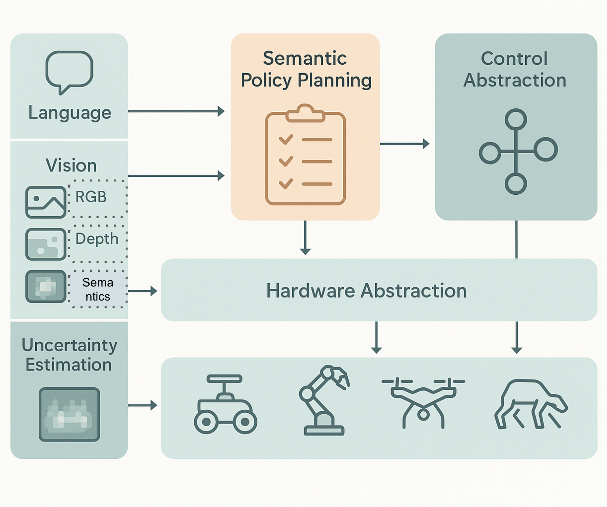

|
Huaze Liu 刘铧泽
Hi! I am a rising Senior undergraduate student at Harvey Mudd College majoring in Computer Science and Mathematics, with a social science concentration in Economics.
I am a full-stack robotics engineer working on robot designing, algorithm development, and policy training. I'm mostly interested in how autonomous systems perceive and navigate in the real world robustly and safely. At Harvey Mudd College, I closely worked with Prof. Adyasha Mohanty at Engineering Department
on foundation models and sensor fusion for trustworthy autonomous vehicle navigation. In the summer of 2025, I am going to work on humanoid robot catching and robotics co-design with Kehlani Fay under the supervision of
Prof. Hao Su and Prof. Mike Tolley at UC San Diego. (P.S.: I'm still building this website. Hopefully I can get it done later this September. If you have any suggestions, feel free to email me!)
Email /
Github /
CV /
Linkedin /
WeChat
|

|
Questions That Always Interest Me
|
|
Question 1: What is the most effective and scalable path to truly robust autonomous navigation?
Should we pursue a perfect multi-modal sensor fusion for maximum redundancy, as seen in systems with LiDAR, IMUs, cameras, etc.?
Or should we champion the development of an advanced, vision-centric AI that can overcome the inherent ambiguities of the physical
world through superior reasoning, an approach famously adopted by Tesla FSD?
This question about the fundamental trade-off between hardware robustness and algorithmic intelligence is central to the future of
autonomy of robotics perception and navigation in general, or what we called, "Spatial Intelligence".
|
|

|
Question 2: Can we build a semantic control platform for robots, specifically mobile manipulation?
As robots now have the "ability" to understand tasks through language and vision, we are now facing
the deeper challenge: how do we translate this semantic understanding into reliable, executable control strategies?
I believe what robotics lacks is a system-level abstraction that unifies perception, high-level policy reasoning, and low-level control execution across hardware platforms.
My long-term goal is to build a modular, uncertainty-aware semantic control interface (just like CUDA for Nvidia GPUs) that enables developers to define goals like pick("red mug") or go_to("coffee machine") and deploy them on real mobile manipulation systems with minimal fine-tuning.
that enables developers to define goals like pick("red mug") or go_to("coffee machine") and deploy them on real mobile manipulation
systems with minimal fine-tuning.
|
|
|
{kind=link}